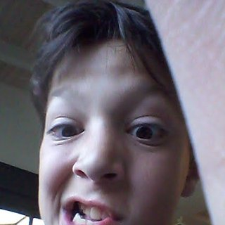

הטיול של מעין
מעין המטורלל בדרום אמריקה. לפני שאתם שואלים: לא יודע לאן אלך, לא יודע מתי אחזור, והאמת שגם לא אכפת לי.
…

מעין המטורלל בדרום אמריקה. לפני שאתם שואלים: לא יודע לאן אלך, לא יודע מתי אחזור, והאמת שגם לא אכפת לי.